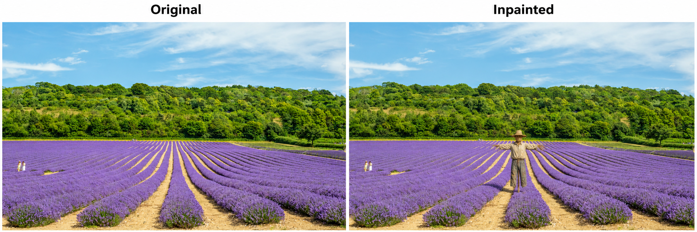
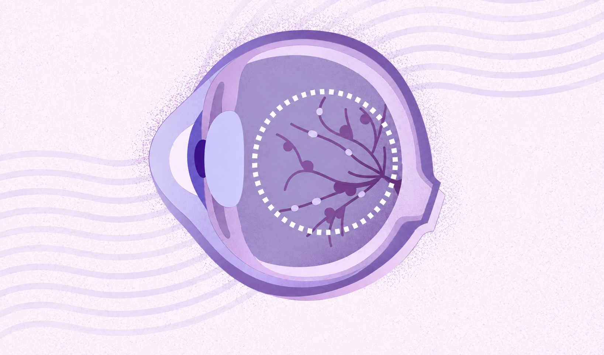
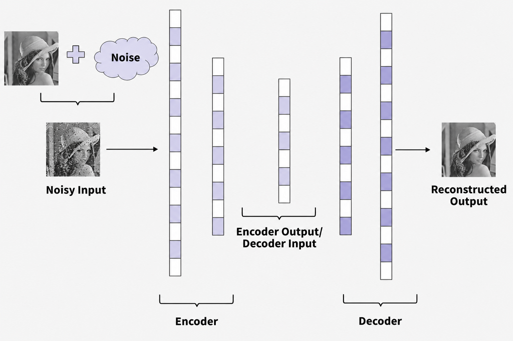

NATURAL LANGUAGE PROCESSING ✦ RETRIEVAL-AUGMENTED GENERATION ✦ APPLIED MACHINE LEARNING
01 / A little about me
Fond of applied research, where research meets industry.
Background
AI engineer and master’s student in NLP at Université Paris-Saclay (Master 2).
2026 Eiffel Excellence Scholarship laureate.
Applied research & engineering
Experience with legal assistants, industrial diagnosis, and household energy analysis.
I enjoy understanding problems deeply, evaluating ideas, and building useful solutions.
My next step
I’m seeking an AI engineering internship starting in March 2027, with opportunities to contribute in machine learning, NLP, and generative AI.
02 / Selected work
Ideas, turned into practice.
A selection of projects across language, vision, and applied AI.
01 / NLP & legal technology
Alex: making legal knowledge accessible
An optimized RAG assistant for Algerian law, designed to help lawyers and students access legal information.
Explore the project
Challenge: Retrieve relevant legal information and support question answering in a specialized domain.
Contribution: Designed, implemented, and benchmarked an architecture with seven optimization layers.
RAGInformation retrievalLLM evaluation

02 / Computer vision research
Looking closer at image authenticity
A unified benchmark for small AI models performing image inpainting detection and localization.
Explore the project
Challenge: Evaluate how models identify and locate edited image regions.
Contribution: Developed a unified benchmark comparing four models on the TGIF dataset. Group project supervised by Prof. Adrian Popescu.
Computer visionBenchmarkingTGIF

03 / Healthcare & deep learning
Diabetic retinopathy classification
An AI-powered mobile application for automatic diabetic retinopathy classification.
Explore the project
Contribution: Applied MobileNet transfer learning using PyTorch and Kotlin.
Reported result: 98% classification accuracy, as documented in my résumé.
PyTorchMobileNetKotlin

04 / Image processing & OCR
Recovering clarity from noise
A denoising autoencoder designed to support optical character recognition.
Explore the project
Challenge: Reduce image noise before OCR processing.
Contribution: Designed and implemented an image denoising autoencoder with PyTorch.
AutoencodersPyTorchImage processing
03 / My journey
Professional journey
AI Engineer
ZAD AI · Algiers
Applied multi-agent AI and RAG systems to industrial machine failure diagnosis and operator qualification. Implemented agents and tools, and conducted research-backed benchmarking to inform production architecture decisions.
AI Researcher
ESTIN · Béjaïa, Algeria
Reviewed state-of-the-art RAG optimization techniques and designed, implemented, and benchmarked approaches for Algerian legal question answering.
Junior AI Engineer
Freelance · Collaborative R&D
Contributed to an educational RAG system through data ingestion pipelines, LLM evaluation, and a custom tokenizer to optimize indexing.
AI Researcher
LIRIS–CNRS Laboratory · Lyon, France
Analyzed the impact of household behavior on energy consumption using machine learning and the Internet of Behaviors.
Junior Data Scientist
Big Mama Technology · Algiers
Designed a semantic search engine, optimized hate speech detection, worked with LLMs, and collaborated with the software engineering team on application integration.
04 / Education & recognition
A foundation for what’s next.
Sep 2026 — Present
Master 2 in AI NLP-oriented
Université Paris-Saclay
Deep Learning for NLP · Information Retrieval · NLP Today · Data Readiness and Evaluation
✦ Eiffel Excellence Scholarship · 2026 Funded by the French Ministry for Europe and Foreign Affairs.
Sep 2022 — Sep 2025
Engineering & Master’s degrees
ESTIN · Béjaïa, Algeria AI & Data Science
State Engineering Degree: 17.62/20 · Rank 4/93 · Thesis 19/20, Excellent. Thesis on an optimized RAG legal assistant.
I value leadership, teamwork, communication, adaptability, creativity, and problem-solving.
McKinsey Forward Program alumna · Jun–Jul 2026 Training in structured problem-solving, effective communication, adaptability, and digital collaboration.
PATHOS Club · 2022–2024 Volunteer administrative member at the American Institute, Algiers. Supported public speaking, technical debates, communication, and interclub events.